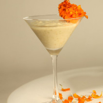

Moong Dal Payasam
Ingredients
150 g Moong Dal150 g Jaggery
500 ml Coconut Water
2 tsp Cardamom Powder
500 ml Water
15 g Cashew nuts
2 tbsp Canola Oil
Method Preparation
Grate the jaggery and keep aside. In a thick bottom pan heat canola oil, add cashew nuts and fry till light brown. Remove and keep aside. In the same pan add little more canola oil and add moong dal and on low heat lightly roast the dal. Make sure the dal does not burn. Add water carefully and cook till dal is mashy. Now add grated jaggery and cook for 2 mins. Carefully add coconut milk and keep cooking for another 5 mins. If the payasam is too thick then add little water. Sprinkle cardamom powder and browned cashew nuts. Serve hot.